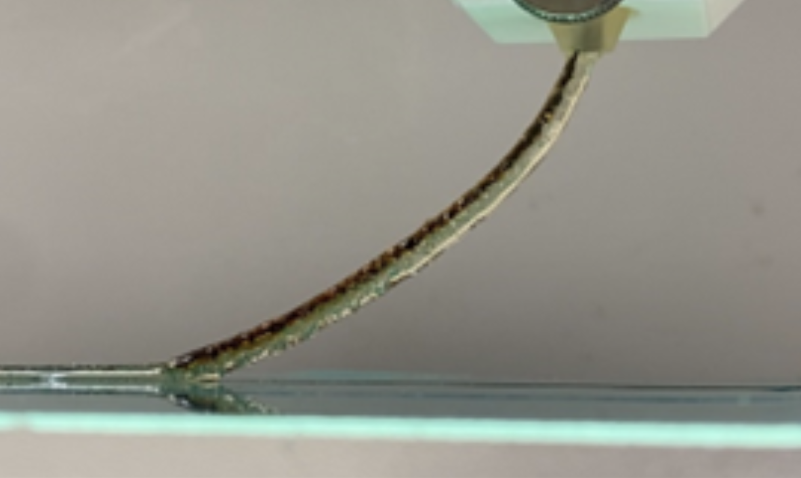

Project Overview

This project involved conducting preliminary 3D printing tests on carbon fiber-reinforced thermosets to analyze print quality, speed, and material usage. Our goal was to develop a more efficient printing process that reduces costs and enhances material properties.
Key Contributions
- Analyzed print efficiency and material usage, reducing costs by 15%.
- Modified the dispensing nozzle to reduce friction by 25%, enhancing material flow.
- Tested thermal properties and evaluated heat resistance, conductivity, and durability.